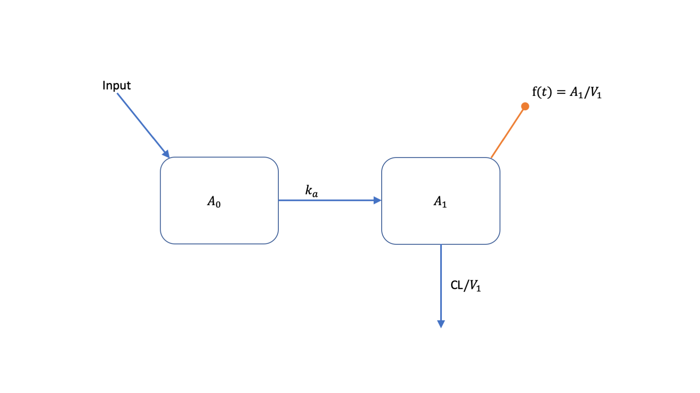
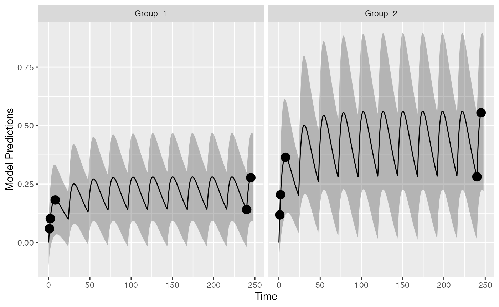
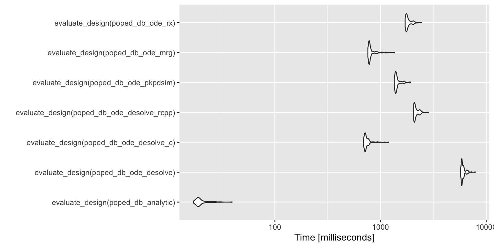

vignettes/model_def_other_pkgs.Rmd
model_def_other_pkgs.RmdThis is a simple example on how to couple PopED with external R based PKPD simulation tools. Typically, these tools might be R packages that can simulate from hierarchical, ordinary differential equation (ODE) based models. In this document you will see how to couple PopED to models, defined with ODEs, implemented using:
For the future we will also show how to use
In this example we will use a one-compartment linear absorption model

This model can be described with the following set of ODEs:
\[ \begin{split} \frac{dA_{0}}{dt} &= - k_{a} \cdot A_{0}\\ \frac{dA_{1}}{dt} &=-(CL/V_1)\cdot A_1 + k_{a} \cdot A_{0} \\ f(t) &= A_1/V_1 \end{split} (\#eq:ode) \]
All compartment amounts are assumed to be zero at time zero (\(\boldsymbol{A}[t=0]=0\)). Inputs to the system come in tablet form and are added to the amount in \(A_{0}\) according to
\[ \text{Input}(t,D,t_D) = \begin{cases} D, &\text{if} \quad t = t_D \\ 0, &\text{otherwise} \end{cases} (\#eq:input) \]
Parameter values are defined as:
\[ \begin{split} k_a &= \theta_1 \cdot e^{\eta_1} \\ CL &= \theta_2 \cdot e^{\eta_2} \\ V_1 &= \theta_3 \cdot e^{\eta_3} \\ \end{split} (\#eq:par) \] where elements of the between subject variability (BSV), \(\eta_{j}\), vary accross individuals and come from normal distributions with means of zero and variances of \(\omega^2_{j}\).
The residual unexplained variability (RUV) model has a proportional and additive component
\[ y = A_1/V_1 \cdot (1+\varepsilon_1) + \varepsilon_2 (\#eq:ruv) \]
elements of \(\boldsymbol{\varepsilon}_{j}\) vary accross observations and come from normal distributions with means of zero and variances of \(\sigma^2_{j}\).
Parameter values are shown in Table @ref(tab:values).| Parameter | Value |
|---|---|
| \(k_a\) | 0.2500 |
| CL | 3.7500 |
| \(V_1\) | 72.8000 |
| \(\omega^2_{k_a}\) | 0.0900 |
| \(\omega^2_{CL}\) | 0.0625 |
| \(\omega^2_{V_1}\) | 0.0900 |
| \(\sigma^2_{prop}\) | 0.0400 |
| \(\sigma^2_{add}\) | 0.0025 |
Below we implement this model using a number of different methods. For the ODE solvers, if possible, we set the tuning parameters to be the same values (atol, rtol, etc.).
First we implement an analytic solution to the model in a function that could be used in PopED.
ff <- function(model_switch,xt,parameters,poped.db){ with(as.list(parameters),{ y=xt N = floor(xt/TAU)+1 y=(DOSE/V)*(KA/(KA - CL/V)) * (exp(-CL/V * (xt - (N - 1) * TAU)) * (1 - exp(-N * CL/V * TAU))/(1 - exp(-CL/V * TAU)) - exp(-KA * (xt - (N - 1) * TAU)) * (1 - exp(-N * KA * TAU))/(1 - exp(-KA * TAU))) return(list( y=y,poped.db=poped.db)) }) }
Model using ODEs defined in deSolve
PK_1_comp_oral_ode <- function(Time, State, Pars){ with(as.list(c(State, Pars)), { dA1 <- -KA*A1 dA2 <- KA*A1 - (CL/V)*A2 return(list(c(dA1, dA2))) }) }
ff_ode_desolve <- function(model_switch, xt, parameters, poped.db){ with(as.list(parameters),{ A_ini <- c(A1=0, A2=0) #Set up time points for the ODE times_xt <- drop(xt) times <- c(0,times_xt) ## add extra time for start of integration dose_times = seq(from=0,to=max(times_xt),by=TAU) times <- c(times,dose_times) times <- sort(times) times <- unique(times) # remove duplicates eventdat <- data.frame(var = c("A1"), time = dose_times, value = c(DOSE), method = c("add")) out <- ode(A_ini, times, PK_1_comp_oral_ode, parameters, events = list(data = eventdat), atol=1e-8, rtol=1e-8,maxsteps=5000) # grab timepoint values out = out[match(times_xt,out[,"time"]),] y = out[,"A2"]/V y=cbind(y) # must be a column matrix return(list(y=y,poped.db=poped.db)) }) }
Model using ODEs defined in deSolve with compiled code
cat(readChar(system.file("examples/one_comp_oral_CL.c", package="PopED"), 1e5)) #> /* file tmdd_qss_one_target.c */ #> #include <R.h> #> static double parms[3]; #> #define CL parms[0] #> #define V parms[1] #> #define KA parms[2] #> #> /* initializer */ #> void initmod(void (* odeparms)(int *, double *)) #> { #> int N=3; #> odeparms(&N, parms); #> } #> #> /* Derivatives and 1 output variable */ #> void derivs (int *neq, double *t, double *y, double *ydot, #> double *yout, int *ip) #> { #> #> if (ip[0] <1) error("nout should be at least 1"); #> #> ydot[0] = -KA*y[0]; #> ydot[1] = KA*y[0] - CL/V*y[1]; #> yout[0] = y[0]+y[1]; #> } #> #> /* END file tmdd_qss_one_target.c */
file.copy(system.file("examples/one_comp_oral_CL.c", package="PopED"),"./one_comp_oral_CL.c") #> [1] FALSE system("R CMD SHLIB one_comp_oral_CL.c") dyn.load(paste("one_comp_oral_CL", .Platform$dynlib.ext, sep = ""))
ff_ode_desolve_c <- function(model_switch, xt, parameters, poped.db){ with(as.list(parameters),{ A_ini <- c(A1=0, A2=0) #Set up time points for the ODE times_xt <- drop(xt) times <- c(0,times_xt) ## add extra time for start of integration dose_times = seq(from=0,to=max(times_xt),by=TAU) times <- c(times,dose_times) times <- sort(times) times <- unique(times) # remove duplicates eventdat <- data.frame(var = c("A1"), time = dose_times, value = c(DOSE), method = c("add")) out <- ode(A_ini, times, func = "derivs", parms = c(CL,V,KA), dllname = "one_comp_oral_CL", initfunc = "initmod", nout = 1, outnames = "Sum", events = list(data = eventdat), atol=1e-8, rtol=1e-8,maxsteps=5000) # grab timepoint values out = out[match(times_xt,out[,"time"]),] y = out[, "A2"]/V y=cbind(y) # must be a column matrix return(list(y=y,poped.db=poped.db)) }) }
Here we define the ODE system using inline C++ code via Rcpp
cppFunction('List one_comp_oral_rcpp(double Time, NumericVector A, NumericVector Pars) { int n = A.size(); NumericVector dA(n); double CL = Pars[0]; double V = Pars[1]; double KA = Pars[2]; dA[0] = -KA*A[0]; dA[1] = KA*A[0] - (CL/V)*A[1]; return List::create(dA); }')
ff_ode_desolve_rcpp <- function(model_switch, xt, p, poped.db){ A_ini <- c(A1=0, A2=0) #Set up time points for the ODE times_xt <- drop(xt) times <- c(0,times_xt) ## add extra time for start of integration dose_times = seq(from=0,to=max(times_xt),by=p[["TAU"]]) times <- c(times,dose_times) times <- sort(times) times <- unique(times) # remove duplicates eventdat <- data.frame(var = c("A1"), time = dose_times, value = c(p[["DOSE"]]), method = c("add")) out <- ode(A_ini, times, one_comp_oral_rcpp, c(CL=p[["CL"]],V=p[["V"]], KA=p[["KA"]]), events = list(data = eventdat), atol=1e-8, rtol=1e-8,maxsteps=5000) # grab timepoint values for central comp y = out[match(times_xt,out[,"time"]),"A2",drop=F]/p[["V"]] return(list(y=y,poped.db=poped.db)) }
The same model written as a set of ODEs using PKPDsim:
pk1cmtoral <- PKPDsim::new_ode_model("pk_1cmt_oral") # take from library ff_ode_pkpdsim <- function(model_switch, xt, p, poped.db){ #Set up time points for the ODE times_xt <- drop(xt) dose_times <- seq(from=0,to=max(times_xt),by=p[["TAU"]]) times <- sort(unique(c(0,times_xt,dose_times))) N = length(dose_times) regimen = PKPDsim::new_regimen(amt=p[["DOSE"]],n=N,interval=p[["TAU"]]) design <- PKPDsim::sim( ode = pk1cmtoral, parameters = c(CL=p[["CL"]],V=p[["V"]],KA=p[["KA"]]), regimen = regimen, only_obs = TRUE, t_obs = times, checks = FALSE, return_design = TRUE) tmp <- PKPDsim::sim_core(sim_object = design, ode = pk1cmtoral) y <- tmp$y m_tmp <- match(round(times_xt,digits = 6),tmp[,"t"]) if(any(is.na(m_tmp))){ stop("can't find time points in solution\n", "try changing the digits argument in the match function") } y <- y[m_tmp] return(list(y = y, poped.db = poped.db)) }
The same model written as a set of ODEs using mrgsolve:
code <- ' $PARAM CL=3.75, V=72.8, KA=0.25 $CMT DEPOT CENT $ODE dxdt_DEPOT = -KA*DEPOT; dxdt_CENT = KA*DEPOT - (CL/V)*CENT; $TABLE double CP = CENT/V; $CAPTURE CP '
Compile and load the model with mcode
moda <- mcode("optim", code, atol=1e-8, rtol=1e-8,maxsteps=5000) #> Building optim ... done.
ff_ode_mrg <- function(model_switch, xt, p, poped.db){ times_xt <- drop(xt) dose_times <- seq(from=0,to=max(times_xt),by=p[["TAU"]]) time <- sort(unique(c(0,times_xt,dose_times))) is.dose <- time %in% dose_times data <- tibble::tibble(ID = 1, time = time, amt = ifelse(is.dose,p[["DOSE"]], 0), cmt = ifelse(is.dose, 1, 0), evid = cmt, CL = p[["CL"]], V = p[["V"]], KA = p[["KA"]]) out <- mrgsim_q(moda, data=data) y <- out$CP y <- y[match(times_xt,out$time)] return(list(y=matrix(y,ncol=1),poped.db=poped.db)) }
The model written for RxODE:
ff_ode_rx <- function(model_switch, xt, p, poped.db){ times_xt <- drop(xt) et(0,amt=p[["DOSE"]], ii=p[["TAU"]], until=max(times_xt)) %>% et(times_xt) -> data out <- rxSolve(modrx, p, data, atol=1e-8, rtol=1e-8,maxsteps=5000, returnType="data.frame") y <- out$CP[match(times_xt,out$time)] return(list(y=matrix(y,ncol=1),poped.db=poped.db)) }
Other functions are used to define BSV and RUV.
sfg <- function(x,a,bpop,b,bocc){ parameters=c( KA=bpop[1]*exp(b[1]), CL=bpop[2]*exp(b[2]), V=bpop[3]*exp(b[3]), DOSE=a[1], TAU=a[2]) return( parameters ) } feps <- function(model_switch,xt,parameters,epsi,poped.db){ y <- do.call(poped.db$model$ff_pointer,list(model_switch,xt,parameters,poped.db))[[1]] y = y*(1+epsi[,1])+epsi[,2] return(list(y=y,poped.db=poped.db)) }
Next we define the model to use, the parameters of those models, the intial design design and design space for any design calculation. Here we create a number of databases that correspond to different model implementations.
The initial design is a 2 group design, with doses of 20 mg or 40 mg every 24 hours. Each group has the same sampling schedule, with 3 samples in the first day of the study and 2 on the 10th day of the study.
poped_db_analytic <- create.poped.database(ff_fun =ff, fg_fun =sfg, fError_fun=feps, bpop=c(KA=0.25,CL=3.75,V=72.8), d=c(KA=0.09,CL=0.25^2,V=0.09), sigma=c(prop=0.04,add=0.0025), m=2, groupsize=20, xt=c( 1,2,8,240,245), minxt=c(0,0,0,240,240), maxxt=c(10,10,10,248,248), bUseGrouped_xt=1, a=cbind(DOSE=c(20,40),TAU=c(24,24)), maxa=c(DOSE=200,TAU=24), mina=c(DOSE=0,TAU=24)) poped_db_ode_desolve <- create.poped.database(poped_db_analytic,ff_fun = ff_ode_desolve) poped_db_ode_desolve_c <- create.poped.database(poped_db_analytic,ff_fun = ff_ode_desolve_c) poped_db_ode_desolve_rcpp <- create.poped.database(poped_db_analytic,ff_fun = ff_ode_desolve_rcpp) poped_db_ode_pkpdsim <- create.poped.database(poped_db_analytic,ff_fun = ff_ode_pkpdsim) poped_db_ode_mrg <- create.poped.database(poped_db_analytic,ff_fun = ff_ode_mrg) poped_db_ode_rx <- create.poped.database(poped_db_analytic,ff_fun = ff_ode_rx)
So are there difference in the model predictions between the different implementations?
Here is a visual representation of the model predictions for this study design, based on the analytic solution:
plot_model_prediction(poped_db_analytic,model_num_points = 500,PI=T,separate.groups = T)

We can compare the different predictions in this plot accross model implementations. Here we see that the accuracy of the different methods are within machine precision (or very small).
pred_std <- model_prediction(poped_db_analytic,model_num_points = 500,include_sample_times = TRUE,PI = TRUE) pred_ode_desolve <- model_prediction(poped_db_ode_desolve, model_num_points = 500, include_sample_times = TRUE, PI = TRUE) all.equal(pred_std,pred_ode_desolve) #> [1] TRUE pred_ode_desolve_c <- model_prediction(poped_db_ode_desolve_c, model_num_points = 500, include_sample_times = TRUE, PI = TRUE) all.equal(pred_std,pred_ode_desolve_c) #> [1] TRUE pred_ode_desolve_rcpp <- model_prediction(poped_db_ode_desolve_rcpp, model_num_points = 500, include_sample_times = TRUE, PI = TRUE) all.equal(pred_std,pred_ode_desolve_rcpp) #> [1] TRUE pred_ode_pkpdsim <- model_prediction(poped_db_ode_pkpdsim, model_num_points = 500, include_sample_times = TRUE, PI = TRUE) all.equal(pred_std,pred_ode_pkpdsim) #> [1] "Component \"PI_l\": Mean relative difference: 3.593837e-08" pred_ode_mrg <- model_prediction(poped_db_ode_mrg, model_num_points = 500, include_sample_times = TRUE, PI = TRUE) all.equal(pred_std,pred_ode_mrg) #> [1] TRUE pred_ode_rx <- model_prediction(poped_db_ode_rx, model_num_points = 500, include_sample_times = TRUE, PI = TRUE) all.equal(pred_std,pred_ode_rx) #> [1] TRUE
Here we compare the computation of the Fisher Information Matrix (FIM). By comparing the \(ln(det(FIM))\) (the lnD-objective function value, or ofv).
(eval_std <- evaluate_design(poped_db_analytic)) #> $ofv #> [1] 48.98804 #> #> $fim #> KA CL V d_KA d_CL d_V #> KA 1695.742314 -11.73537527 -6.75450789 0.00000 0.00000 0.00000 #> CL -11.735375 29.99735715 -0.03288331 0.00000 0.00000 0.00000 #> V -6.754508 -0.03288331 0.04213359 0.00000 0.00000 0.00000 #> d_KA 0.000000 0.00000000 0.00000000 147.24270 1.52226 192.23403 #> d_CL 0.000000 0.00000000 0.00000000 1.52226 2254.55188 1.21987 #> d_V 0.000000 0.00000000 0.00000000 192.23403 1.21987 634.42055 #> sig_prop 0.000000 0.00000000 0.00000000 148.86724 844.57325 387.53816 #> sig_add 0.000000 0.00000000 0.00000000 6555.68433 14391.88132 8669.58391 #> sig_prop sig_add #> KA 0.0000 0.000 #> CL 0.0000 0.000 #> V 0.0000 0.000 #> d_KA 148.8672 6555.684 #> d_CL 844.5733 14391.881 #> d_V 387.5382 8669.584 #> sig_prop 7759.5374 110702.705 #> sig_add 110702.7045 4436323.946 #> #> $rse #> KA CL V d_KA d_CL d_V sig_prop #> 16.285678 4.909749 11.209270 120.825798 34.448477 57.300408 36.104027 #> sig_add #> 24.339781
All the computations give very similar results:
eval_ode_desolve <- evaluate_design(poped_db_ode_desolve) all.equal(eval_std$ofv,eval_ode_desolve$ofv) #> [1] "Mean relative difference: 2.493735e-08" eval_ode_desolve_c <- evaluate_design(poped_db_ode_desolve_c) all.equal(eval_std$ofv,eval_ode_desolve_c$ofv) #> [1] "Mean relative difference: 2.493735e-08" eval_ode_desolve_rccp <- evaluate_design(poped_db_ode_desolve_rcpp) all.equal(eval_std$ofv,eval_ode_desolve_rccp$ofv) #> [1] "Mean relative difference: 2.493735e-08" eval_ode_pkpdsim <- evaluate_design(poped_db_ode_pkpdsim) all.equal(eval_std$ofv,eval_ode_pkpdsim$ofv) #> [1] TRUE eval_ode_mrg <- evaluate_design(poped_db_ode_mrg) all.equal(eval_std$ofv,eval_ode_mrg$ofv) #> [1] "Mean relative difference: 2.361616e-08"
We can compare the speed of the computations. Analytic solutions are fast, as expected, in this case more than 20 times faster than any of the ODE methods. mrgsolve is the fastest of the ODE solvers in this example. Note that, in previous work (http://pkpdsim.ronkeizer.com/speed.html), much of the speed difference between mrgsolve, RxODE and PKPDsim has been found to be due to the overhead from pre- and post-processing of the simulation from ODE systems. Other ways of handling the pre- and post-processing may speed up these computations.
library(microbenchmark) library(ggplot2) compare <- microbenchmark( evaluate_design(poped_db_analytic), evaluate_design(poped_db_ode_desolve), evaluate_design(poped_db_ode_desolve_c), evaluate_design(poped_db_ode_desolve_rcpp), evaluate_design(poped_db_ode_pkpdsim), evaluate_design(poped_db_ode_mrg), evaluate_design(poped_db_ode_rx), times = 100L) autoplot(compare)

devtools::session_info() #> ─ Session info ─────────────────────────────────────────────────────────────── #> setting value #> version R version 4.0.1 (2020-06-06) #> os macOS Catalina 10.15.5 #> system x86_64, darwin17.0 #> ui X11 #> language (EN) #> collate en_US.UTF-8 #> ctype en_US.UTF-8 #> tz Europe/Stockholm #> date 2020-06-13 #> #> ─ Packages ─────────────────────────────────────────────────────────────────── #> ! package * version date lib #> assertthat 0.2.1 2019-03-21 [2] #> backports 1.1.7 2020-05-13 [2] #> bookdown 0.19 2020-05-15 [2] #> boot 1.3-25 2020-04-26 [2] #> callr 3.4.3 2020-03-28 [2] #> cli 2.0.2 2020-02-28 [2] #> codetools 0.2-16 2018-12-24 [2] #> colorspace 1.4-1 2019-03-18 [2] #> crayon 1.3.4 2017-09-16 [2] #> curl 4.3 2019-12-02 [2] #> data.table 1.12.8 2019-12-09 [2] #> desc 1.2.0 2018-05-01 [2] #> deSolve * 1.28 2020-03-08 [2] #> devtools 2.3.0 2020-04-10 [2] #> digest 0.6.25 2020-02-23 [2] #> dplyr 1.0.0 2020-05-29 [2] #> ellipsis 0.3.1 2020-05-15 [2] #> evaluate 0.14 2019-05-28 [2] #> fansi 0.4.1 2020-01-08 [2] #> fs 1.4.1 2020-04-04 [2] #> generics 0.0.2 2018-11-29 [2] #> ggplot2 3.3.1 2020-05-28 [2] #> glue 1.4.1 2020-05-13 [2] #> gtable 0.3.0 2019-03-25 [2] #> gtools 3.8.2 2020-03-31 [2] #> hms 0.5.3 2020-01-08 [2] #> htmltools 0.4.0 2019-10-04 [2] #> httr 1.4.1 2019-08-05 [2] #> kableExtra * 1.1.0 2019-03-16 [2] #> knitr * 1.28 2020-02-06 [2] #> lifecycle 0.2.0 2020-03-06 [2] #> lotri 0.2.2 2020-05-29 [2] #> magrittr 1.5 2014-11-22 [2] #> MASS 7.3-51.6 2020-04-26 [2] #> memoise 1.1.0 2017-04-21 [2] #> mrgsolve * 0.10.1 2020-02-21 [2] #> munsell 0.5.0 2018-06-12 [2] #> mvnfast 0.2.5 2018-01-31 [2] #> mvtnorm 1.1-0 2020-02-24 [2] #> pillar 1.4.4 2020-05-05 [2] #> pkgbuild 1.0.8 2020-05-07 [2] #> pkgconfig 2.0.3 2019-09-22 [2] #> pkgdown 1.5.1 2020-04-09 [2] #> pkgload 1.1.0 2020-05-29 [2] #> PKPDsim * 1.0.7 2020-04-29 [2] #> P PopED * 0.5.0 2020-06-13 [?] #> PreciseSums 0.3 2018-04-12 [2] #> prettyunits 1.1.1 2020-01-24 [2] #> processx 3.4.2 2020-02-09 [2] #> ps 1.3.3 2020-05-08 [2] #> purrr 0.3.4 2020-04-17 [2] #> R6 2.4.1 2019-11-12 [2] #> Rcpp * 1.0.4.6 2020-04-09 [2] #> RcppArmadillo 0.9.880.1.0 2020-05-17 [2] #> readr 1.3.1 2018-12-21 [2] #> remotes 2.1.1 2020-02-15 [2] #> rlang 0.4.6 2020-05-02 [2] #> rmarkdown 2.2 2020-05-31 [2] #> rprojroot 1.3-2 2018-01-03 [2] #> rstudioapi 0.11 2020-02-07 [2] #> rvest 0.3.5 2019-11-08 [2] #> RxODE * 0.9.2-0 2020-03-13 [2] #> scales 1.1.1 2020-05-11 [2] #> sessioninfo 1.1.1 2018-11-05 [2] #> stringi 1.4.6 2020-02-17 [2] #> stringr 1.4.0 2019-02-10 [2] #> testthat * 2.3.2 2020-03-02 [2] #> tibble 3.0.1 2020-04-20 [2] #> tidyselect 1.1.0 2020-05-11 [2] #> units 0.6-6 2020-03-16 [2] #> usethis 1.6.1 2020-04-29 [2] #> vctrs 0.3.1 2020-06-05 [2] #> viridisLite 0.3.0 2018-02-01 [2] #> webshot 0.5.2 2019-11-22 [2] #> withr 2.2.0 2020-04-20 [2] #> xfun 0.14 2020-05-20 [2] #> xml2 1.3.2 2020-04-23 [2] #> yaml 2.2.1 2020-02-01 [2] #> source #> CRAN (R 4.0.0) #> CRAN (R 4.0.0) #> CRAN (R 4.0.0) #> CRAN (R 4.0.1) #> CRAN (R 4.0.0) #> CRAN (R 4.0.0) #> CRAN (R 4.0.1) #> CRAN (R 4.0.0) #> CRAN (R 4.0.0) #> CRAN (R 4.0.0) #> CRAN (R 4.0.0) #> CRAN (R 4.0.0) #> CRAN (R 4.0.0) #> CRAN (R 4.0.0) #> CRAN (R 4.0.0) #> CRAN (R 4.0.0) #> CRAN (R 4.0.0) #> CRAN (R 4.0.0) #> CRAN (R 4.0.0) #> CRAN (R 4.0.0) #> CRAN (R 4.0.0) #> CRAN (R 4.0.0) #> CRAN (R 4.0.0) #> CRAN (R 4.0.0) #> CRAN (R 4.0.0) #> CRAN (R 4.0.0) #> CRAN (R 4.0.0) #> CRAN (R 4.0.0) #> CRAN (R 4.0.0) #> CRAN (R 4.0.0) #> CRAN (R 4.0.0) #> CRAN (R 4.0.0) #> CRAN (R 4.0.0) #> CRAN (R 4.0.1) #> CRAN (R 4.0.0) #> CRAN (R 4.0.0) #> CRAN (R 4.0.0) #> CRAN (R 4.0.0) #> CRAN (R 4.0.0) #> CRAN (R 4.0.0) #> CRAN (R 4.0.0) #> CRAN (R 4.0.0) #> CRAN (R 4.0.0) #> CRAN (R 4.0.0) #> Github (InsightRX/PKPDsim@bd9b9e4) #> local #> CRAN (R 4.0.0) #> CRAN (R 4.0.0) #> CRAN (R 4.0.0) #> CRAN (R 4.0.0) #> CRAN (R 4.0.0) #> CRAN (R 4.0.0) #> CRAN (R 4.0.0) #> CRAN (R 4.0.0) #> CRAN (R 4.0.0) #> CRAN (R 4.0.0) #> CRAN (R 4.0.0) #> CRAN (R 4.0.0) #> CRAN (R 4.0.0) #> CRAN (R 4.0.0) #> CRAN (R 4.0.0) #> CRAN (R 4.0.0) #> CRAN (R 4.0.0) #> CRAN (R 4.0.0) #> CRAN (R 4.0.0) #> CRAN (R 4.0.0) #> CRAN (R 4.0.0) #> CRAN (R 4.0.0) #> CRAN (R 4.0.0) #> CRAN (R 4.0.0) #> CRAN (R 4.0.0) #> CRAN (R 4.0.0) #> CRAN (R 4.0.0) #> CRAN (R 4.0.0) #> CRAN (R 4.0.0) #> CRAN (R 4.0.0) #> CRAN (R 4.0.0) #> CRAN (R 4.0.0) #> #> [1] /private/var/folders/pl/wj3tbf3s19db0h0p_j11_jym0000gp/T/RtmpfqCcRc/temp_libpath2b86141e5380 #> [2] /Library/Frameworks/R.framework/Versions/4.0/Resources/library #> #> P ── Loaded and on-disk path mismatch. #sessionInfo()